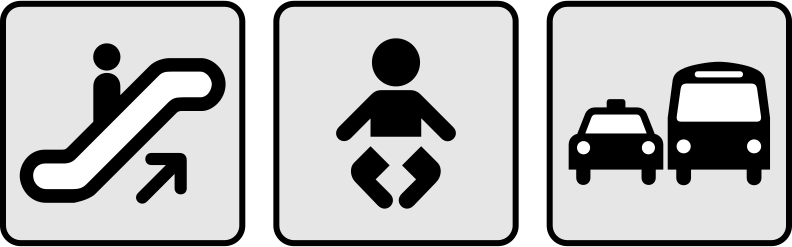

(1) 情報デザイン
デザインとアート
アートは作者が表現したいことを形にすることです。目的の有無にかかわらず、作者が表現したいことを思いのまま形にしたものです。アートを見る人は、人によってさまざまな受け取り方をすることもあります。
一方、デザインは、伝えたいことを相手にわかりやすく伝えるためのツールで、問題解決などの目的があります。見る人によって解釈が異なるようなものは、いいデザインとは言えません。
情報デザイン
情報デザインは、情報を視覚的に効果的に伝えるためのデザインの分野です。情報を見やすく、理解しやすく、利用しやすくすることを目的としています。
- 抽象化
- 具体的なものや動作などについて、要点をシンプルに伝える。ピクトグラムなど。
- 可視化
- データを表・グラフ・図などで表す。また、樹形図やフローチャートなどのダイアグラムで表す。
- 構造化
- 情報をある基準にしたがって整理して表す。文章を章や節のはじめに小見出しをつけるたり、Webページのレイアウトや階層メニューなど。
(2) ピクトグラム
ピクトグラムとは
伝えたい情報を抽象化して、簡単な構図と明瞭な色で表された図をピクトグラムといい、日本語では「絵文字」「絵単語」などとよばれます。言葉の壁を越えて、誰でも理解できるように設計されています。

ピクトグラムの例（パブリックドメイン）。
ピクトグラムの歴史
ピクトグラムの歴史は古く、原始時代の壁画やエジプトの象形文字がその始まりとされています。しかし、現代のピクトグラムは主に20世紀に発展しました。1964年の東京オリンピックでは、初めて大規模なスポーツイベントで統一されたピクトグラムが使用されました。
ピクトグラムの特徴
- シンプルで分かりやすい
- ピクトグラムは複雑なデザインを避け、シンプルで視覚的に理解しやすい形状をしています。
- ユニバーサル
- 言語や文化に依存せず、誰にでも理解できるように設計されています。
- 直感的
- 見た瞬間に何を表しているのかが直感的にわかります。
ピクトグラムの役割
ピクトグラムは、特に緊急時や公共の場所で重要な役割を果たします。言葉で説明する時間がない状況でも、ピクトグラムを見ればすぐに行動を取ることができます。これにより、安全性が向上し、多くの人が安心して行動できるようになります。
(3) ピクトグラム作成の練習
ピクトグラム作成の練習
18×18ピクセルのキャンバスでピクトグラムを作成する練習をしてみましょう。
テンプレートファイル
提出内容
- 提出ファイル形式
- ① PNGファイル(.png)
- ② Adobe Illustratorファイル(.ai)
- ※PNGファイルへの出力については、画像ファイルの出力を参照すること。
- ※提出先は各課題の「提出はコチラ」をクリックし、Googleフォームを開くこと。
PNGファイルの出力
保存先のフォルダを選択すると、倍率ごとにフォルダが作成され（今回は400h）、その中に画像ファイルが書き出されます。
練習1. ナイフとフォーク
まずは直線だけでナイフとフォークのピクトグラムを作成してみましょう。
練習2. 水滴
ライブコーナーを使って頂点を丸くする練習をしましょう。
練習3. ハート
パスファインダーを使ってオブジェクトを組み合わせてみましょう。